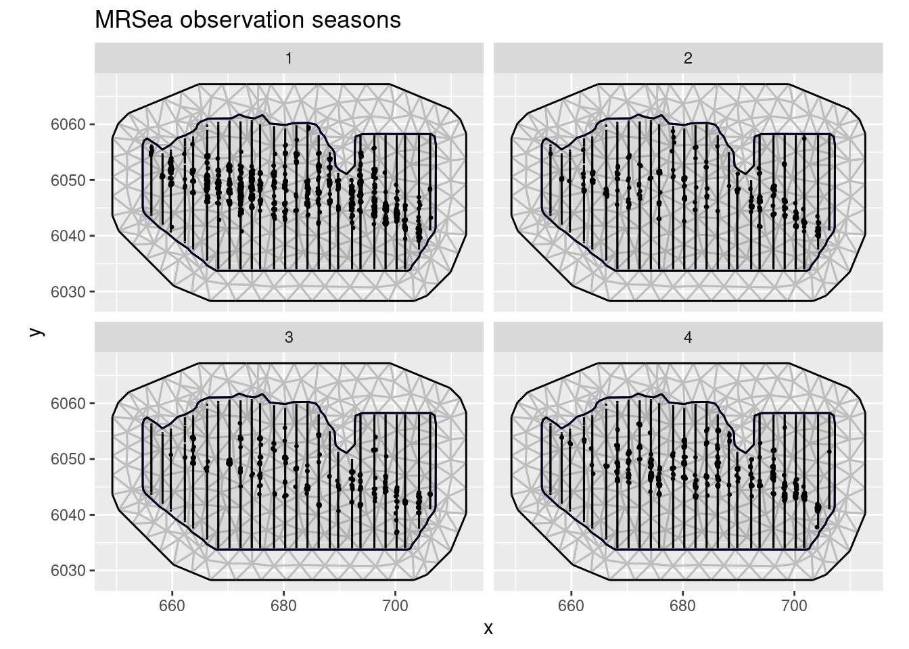
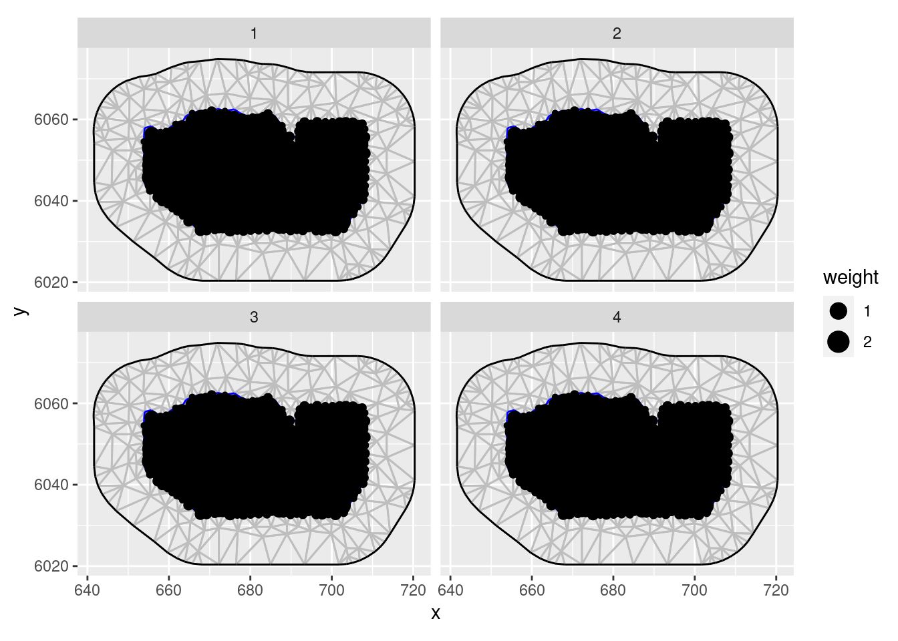
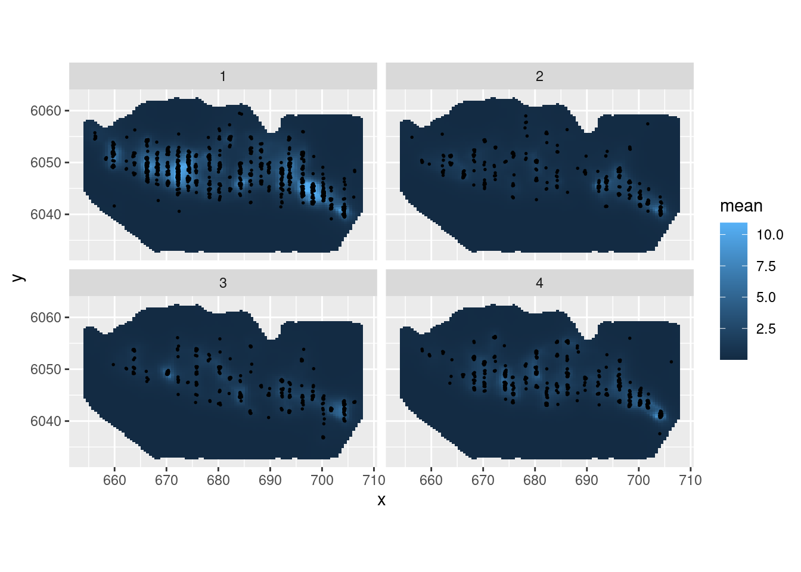

vignettes/web/2d_lgcp_spatiotemporal.Rmd
2d_lgcp_spatiotemporal.RmdFor this vignette we are going to be working with a dataset obtained from the R package MRSea. We will set up a LGCP with a spatio-temporal SPDE model to estimate species distribution.
Load the dataset, that has coordinates in UTM in kilometres:
data(mrsea, package = "inlabru")The points (representing animals) and the sampling regions of this dataset are associated with a season. Let’s have a look at the observed points and sampling regions for all seasons:
ggplot() +
gg(mrsea$mesh) +
gg(mrsea$boundary) +
gg(mrsea$samplers) +
gg(mrsea$points, size = 0.5) +
coord_fixed() +
facet_wrap(~season) +
ggtitle("MRSea observation seasons")
Because our model will take time (season) into account we have to construct the integration points for the LGCP accordingly. Using the ´group´ parameter we can let the ´ipoints´ function know that we would like to construct the integration points for each season independently. Note that omitting this step would simply aggregate all sampling regions over time.
ips <- ipoints(mrsea$samplers, mrsea$mesh, group = "season")Plot the integration points:
ggplot() +
gg(ips, aes(color = season)) +
facet_wrap(~season) +
coord_equal()
Fit an LGCP model to the locations of the animals. In this example we will employ a spatio-temporal SPDE. Note how the group and ngroup parameters are employed to let the SPDE model know about the name of the time dimension (season) and the total number of distinct points in time.
matern <- inla.spde2.pcmatern(mrsea$mesh,
prior.sigma = c(0.1, 0.01),
prior.range = c(10, 0.01)
)
cmp <- coordinates + season ~ mySmooth(coordinates,
model = matern, group = season, ngroup = 4
) +
Intercept
fit <- lgcp(cmp, mrsea$points, ips = ips)Predict and plot the intensity for all seasons:
ppxl <- pixels(mrsea$mesh, mask = mrsea$boundary)
ppxl_all <- cprod(ppxl, data.frame(season = seq_len(4)))
lambda1 <- predict(fit, ppxl_all, ~ data.frame(season = season, lambda = exp(mySmooth + Intercept)))
pl1 <- ggplot() +
gg(lambda1, aes(fill = mean)) +
gg(mrsea$points, size = 0.3) +
facet_wrap(~season) +
coord_equal()
pl1